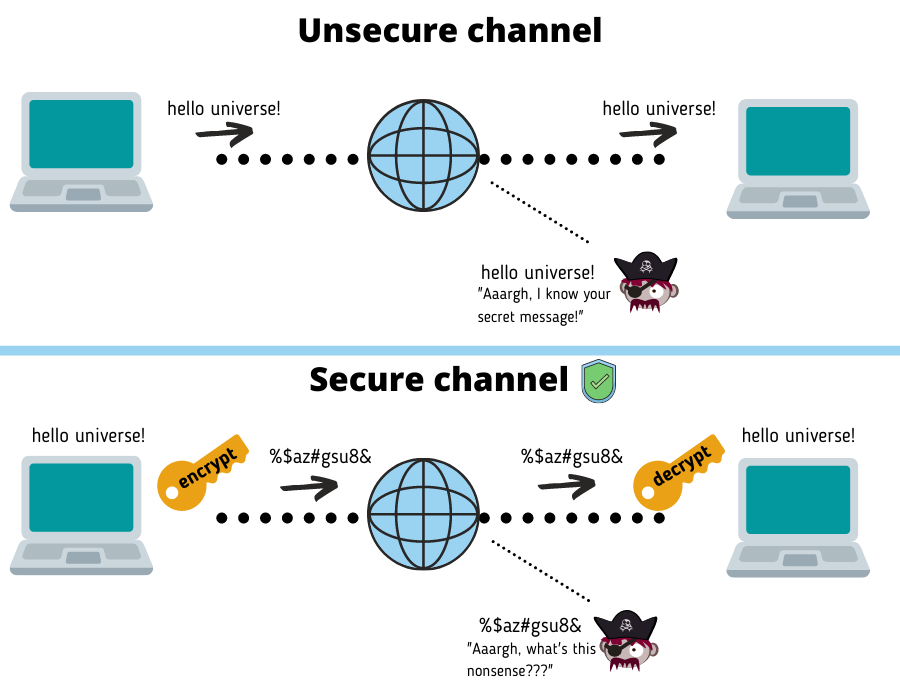

Paso 1: ¿Qué es SSH?
SSH (Secure Shell) es un protocolo que permite la comunicación segura entre dos sistemas mediante cifrado. Es ampliamente utilizado para acceso remoto y transferencia segura de archivos.
En el contexto de GitHub, SSH se utiliza para autenticar las operaciones con repositorios sin necesidad de introducir credenciales en cada operación.
Paso 2: Generar Claves SSH
Genera un par de claves SSH (privada y pública):
ssh-keygen -t rsa -b 4096 -C "tu_email@ejemplo.com"Este comando:
- Genera un par de claves RSA de 4096 bits.
- Asocia la clave con tu correo electrónico como etiqueta.
Cuando se te pregunte, guarda las claves en la ubicación predeterminada (~/.ssh/id_rsa).
Paso 3: Agregar la Clave Pública a GitHub
Sigue estos pasos para añadir tu clave pública a GitHub:
- Abre el archivo de la clave pública generada con el siguiente comando:
cat ~/.ssh/id_rsa.pub - Copia el contenido del archivo.
- Entra a tu cuenta de GitHub y ve a Settings > SSH and GPG keys.
- Haz clic en New SSH Key, pega la clave pública copiada y guarda los cambios.
Paso 4: Probar la Configuración
Verifica que la configuración sea correcta ejecutando:
ssh -T git@github.comSi todo está bien, deberías ver un mensaje como:
Hi ! You've successfully authenticated, but GitHub does not provide shell access. Paso 5: Crear y Subir un Repositorio a GitHub
A continuación, se muestra un ejemplo práctico de cómo crear un repositorio, añadir un archivo básico y subirlo usando SSH:
- Crea un nuevo repositorio en GitHub (sin un README ni archivos adicionales).
- Abre tu terminal y clona el repositorio vacío:
git clone git@github.com:tu_usuario/tu_repositorio.git - Navega al directorio del repositorio:
cd tu_repositorio - Crea un archivo básico y añádelo al repositorio:
echo "# Mi nuevo repositorio" > README.md git add README.md git commit -m "Añadir README inicial" - Sube los cambios a GitHub:
git push origin main - Si necesitas actualizar la URL remota del repositorio, usa:
git remote set-url origin git@github.com:tu_usuario/tu_repositorio.git
Este flujo básico asegura que tu repositorio esté configurado correctamente y que puedas gestionarlo usando SSH.
Resumen de Pasos
| Paso | Descripción |
|---|---|
| 1 | Entender qué es SSH y su utilidad en GitHub. |
| 2 | Generar un par de claves SSH. |
| 3 | Agregar la clave pública a tu cuenta de GitHub. |
| 4 | Probar la configuración para confirmar que la autenticación funciona. |
| 5 | Crear y subir un repositorio a GitHub usando SSH. |